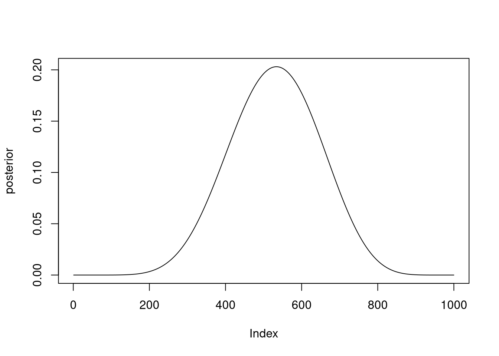
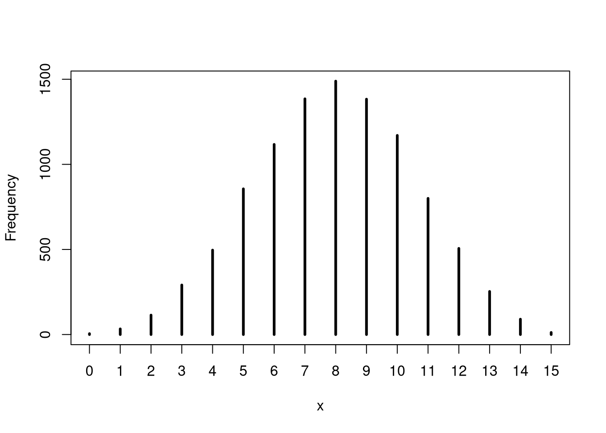
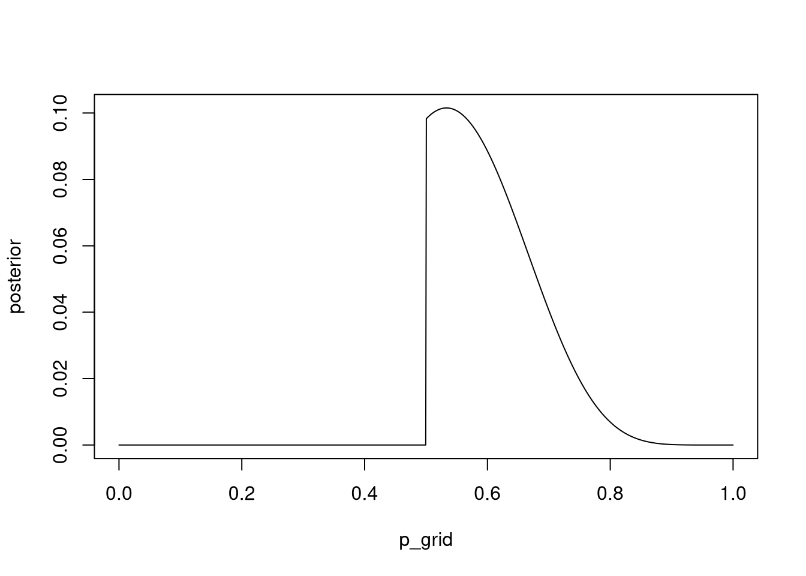
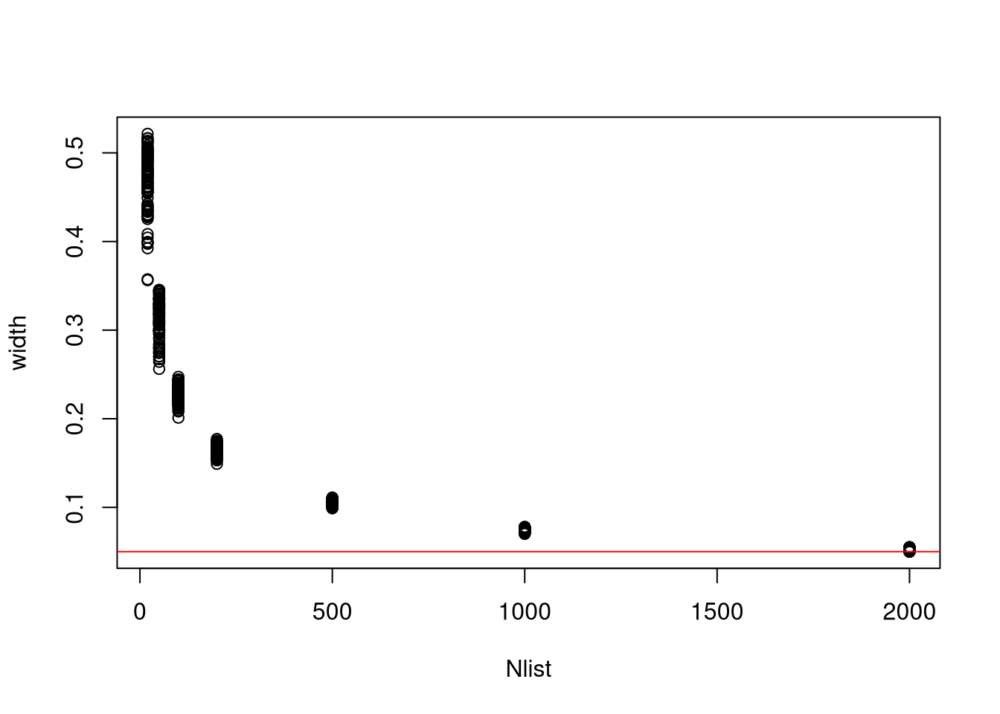
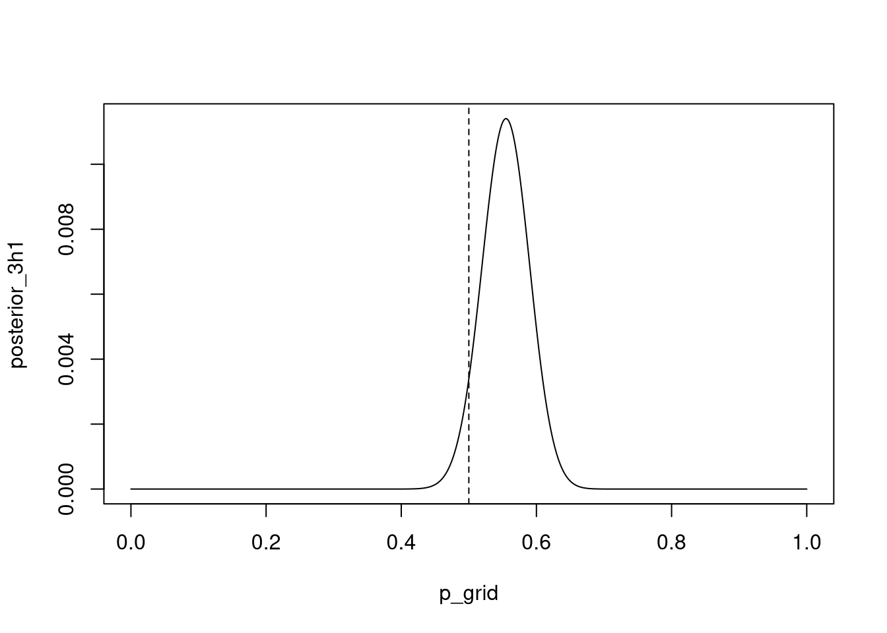
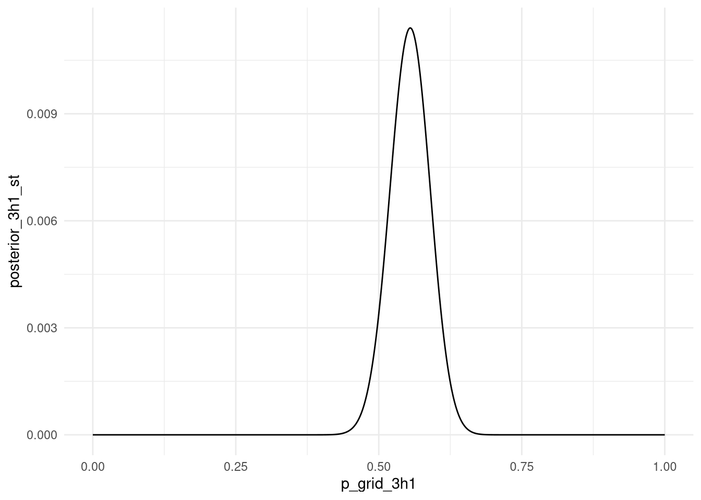
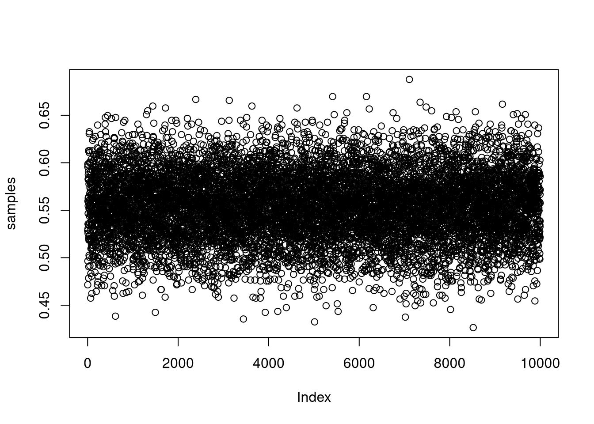
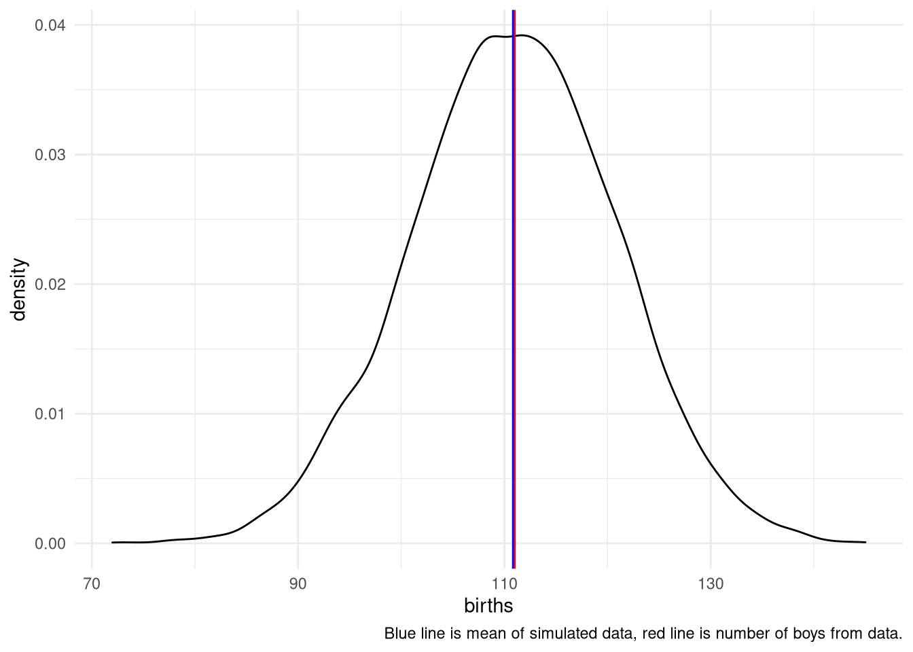
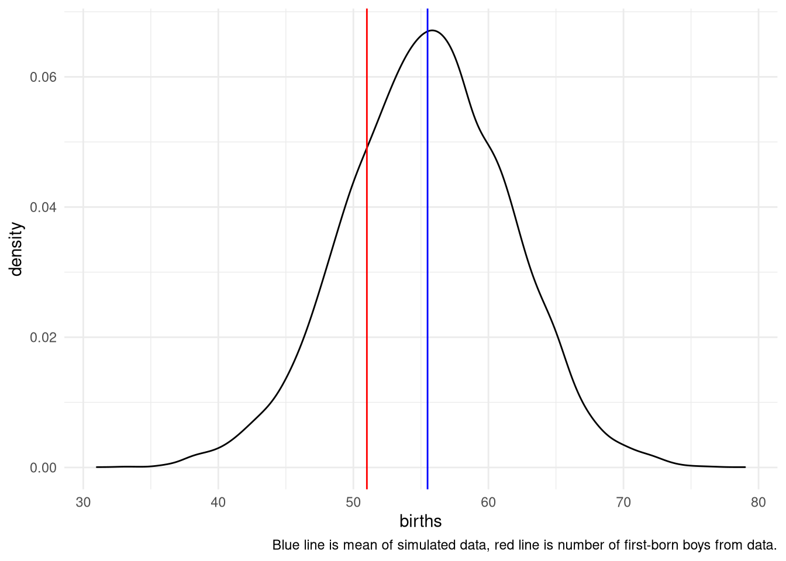
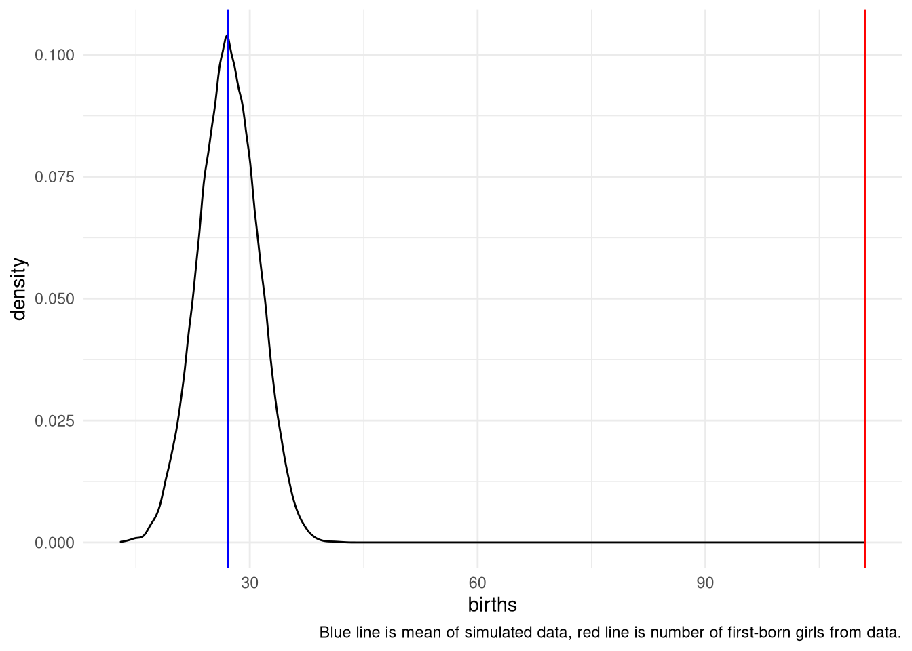

Chapter 3 Sampling the Imaginary
Exercises from Chapter 3 of the book.
library(tidyverse)
library(rethinking)Лесните прашања го користат кодот од книгата и само правиме пресметки што се опишан во 3.2. Sampling to summarize section на книгата.
p_grid <- seq( from=0 , to=1 , length.out=1000 )
prior <- rep( 1 , 1000 )
likelihood <- dbinom( 6 , size=9 , prob=p_grid )
posterior <- likelihood * prior
posterior <- posterior / sum(posterior)
set.seed(100)
samples <- sample( p_grid , prob=posterior , size=1e4 , replace=TRUE )3E1. How much posterior probability lies below p = 0.2?
mean( samples < 0.2 )## [1] 4e-043E2. How much posterior probability lies above p = 0.8?
mean( samples > 0.8 )## [1] 0.11163E3. How much posterior probability lies between p = 0.2 and p = 0.8?
mean( samples > 0.2 & samples < 0.8 )## [1] 0.888Аll three should be 1.
sum(mean( samples < 0.2 ), mean( samples > 0.8 ), mean( samples > 0.2 & samples < 0.8 ))## [1] 13E4. 20% of the posterior probability lies below which value of p?
quantile(samples, 0.2)## 20%
## 0.51851853E5. 20% of the posterior probability lies above which value of p?
quantile(samples, 0.8)## 80%
## 0.75575583E6. Which values of p contain the narrowest interval equal to 66% of the posterior probability?
HPDI( samples , prob=0.66 )## |0.66 0.66|
## 0.5085085 0.7737738Trying the tidybayes functions. The results are the same.
tidybayes::mode_hdi(samples, .width = .66)## y ymin ymax .width .point .interval
## 1 0.6477573 0.5085085 0.7737738 0.66 mode hditidybayes::hdi(samples, .width = .66)## [,1] [,2]
## [1,] 0.5085085 0.77377383E7. Which values of p contain 66% of the posterior probability, assuming equal posterior probability both below and above the interval?
PI(samples, prob = 0.66)## 17% 83%
## 0.5025025 0.76976983M1. Suppose the globe tossing data had turned out to be 8 water in 15 tosses. Construct the posterior distribution, using grid approximation. Use the same flat prior as before.
Ова е истиот проблем како лесните, единствено ги менуваме параметрите на dbinom.
p_grid <- seq(from=0, to=1, length.out=1000)
prior <- rep(1, 1000)
likelihood <- dbinom(8, size=15, prob=p_grid)
posterior <- likelihood * prior
posterior_3m1 <- posterior / sum(posterior)
plot(posterior, type = "l")
3M2. Draw 10,000 samples from the grid approximation from above. Then use the samples to calculate the 90% HPDI for p.
samples <- sample( p_grid , prob=posterior_3m1 , size=1e4 , replace=TRUE )
HPDI( samples , prob=0.9 )## |0.9 0.9|
## 0.3293293 0.71671673M3. Construct a posterior predictive check for this model and data. This means simulate the distribution of samples, averaging over the posterior uncertainty in p.
Ова значи да симулираме податоци од моделот. Делот 3.3.2 од книгата.
set.seed(123)
simulate_w <- rbinom( 1e4 , size=15 , prob=samples )
simplehist(simulate_w)
What is the probability of observing 8 water in 15 tosses?
mean(simulate_w == 8)## [1] 0.14893M4. Using the posterior distribution constructed from the new (8/15) data, now calculate the probability of observing 6 water in 9 tosses.
set.seed(123)
simulate_w <- rbinom( 1e4 , size=9 , prob=samples )
mean(simulate_w == 6)## [1] 0.17323M5. Start over at 3M1, but now use a prior that is zero below p = 0.5 and a constant above p = 0.5. This corresponds to prior information that a majority of the Earth’s surface is water. Repeat each problem above and compare the inferences. What difference does the better prior make? If it helps, compare inferences (using both priors) to the true value p = 0.7.
p_grid <- seq( from=0 , to=1 , length.out=1000 )
prior3m5 <- ifelse(p_grid < 0.5, 0, 0.5)
likelihood <- dbinom( 8 , size=15 , prob=p_grid )
posterior <- likelihood * prior3m5
posterior_3m5 <- posterior / sum(posterior)
plot(p_grid, posterior , type = "l")
Сега добиваме posterior дистрибуција која што за вредностите на параметарот под 0.5 практично кажува дека нема шанси да се случат.
samples <- sample( p_grid , prob=posterior_3m5 , size=1e4 , replace=TRUE )
HPDI( samples , prob=0.9 )## |0.9 0.9|
## 0.5005005 0.7167167HPDI интервалот исто така е многу потесен споредено со 3М2.
3M6. Suppose you want to estimate the Earth’s proportion of water very precisely. Specifically, you want the 99% percentile interval of the posterior distribution of p to be only 0.05 wide. This means the distance between the upper and lower bound of the interval should be 0.05. How many times will you have to toss the globe to do this?
Ова решение го презедов од решенијата што ги пишува Richard McEarleth. Не ми беше јасно прашањето се додека не видов што прави кодот во решението.
Во овој проблем, всушност непознато е колку обзервации треба да направиме за да ја добиеме саканата прецизност. Решението е такво што ја бара прецизност на серија обзервации (од 20 до 2000).
f <- function(N) {
p_true <- 0.7
W <- rbinom(1, size = N, prob = p_true)
prob_grid <- seq(0, 1, length.out = 1000)
prior <- rep(1, 1000)
prob_data <- dbinom(W, size = N, prob = prob_grid)
posterior <- prob_data * prior
posterior <- posterior / sum(posterior)
samples <- sample(p_grid, prob = posterior, size = 1e4, replace = TRUE)
PI99 <- PI(samples, .99)
as.numeric(PI99[2] - PI99[1])
}
Nlist <- c(20, 50, 100, 200, 500, 1000, 2000)
Nlist <- rep(Nlist, each = 100)
width <- sapply(Nlist, f)
plot(Nlist, width)
abline(h = 0.05, col = "red")
3H1. Using grid approximation, compute the posterior distribution for the probability of a birth being a boy. Assume a uniform prior probability.
data(homeworkch3)
all_boys <- sum(birth1) + sum(birth2)p_grid <- seq( from=0 , to=1 , length.out=1000 )
prior3h1 <- prior <- rep(1,length(p_grid))
likelihood <- dbinom( all_boys , size=length(birth1) + length(birth2) , prob=p_grid )
posterior <- likelihood * prior3h1
posterior_3h1 <- posterior / sum(posterior)
plot(p_grid, posterior_3h1 , type="l" )
abline( v=0.5 , lty=2 )
Which parameter value maximizes the posterior probability?
p_grid[ which.max(posterior) ]## [1] 0.5545546Можеби интересно да се види како ова би се напишало во tidyverse код:
data_for_3h1 <-
tibble(p_grid_3h1 = seq(from = 0, to = 1, length.out = 1000)) %>%
mutate(prior_3h1 = 1) %>%
mutate(data_for_3h1 = dbinom( all_boys , size=length(birth1) + length(birth2) , prob=p_grid_3h1 )) %>%
mutate(posterior_3h1 = data_for_3h1 * prior_3h1) %>%
mutate(posterior_3h1_st = posterior_3h1 / sum(posterior_3h1))ggplot(data_for_3h1) +
aes(x = p_grid_3h1, y = posterior_3h1_st) +
geom_line() +
theme_minimal()
3H2. Using the sample function, draw 10,000 random parameter values from the posterior distribution you calculated above. Use these samples to estimate the 50%, 89%, and 97% highest posterior density intervals.
samples <- sample( data_for_3h1$p_grid_3h1 , prob=data_for_3h1$posterior_3h1_st , size=1e4 , replace=TRUE )
plot(samples)
tidybayes::hdi(samples, .width = .50)## [,1] [,2]
## [1,] 0.5255255 0.5725726tidybayes::hdi(samples, .width = .89)## [,1] [,2]
## [1,] 0.5005005 0.6126126tidybayes::hdi(samples, .width = .97)## [,1] [,2]
## [1,] 0.4774775 0.62762763H3. Use rbinom to simulate 10,000 replicates of 200 births. You should end up with 10,000 numbers, each one a count of boys out of 200 births. Compare the distribution of predicted numbers of boys to the actual count in the data (111 boys out of 200 births). There are many good ways to visualize the simulations, but the dens command (part of the rethinking package) is probably the easiest way in this case. Does it look like the model fits the data well? That is, does the distribution of predictions include the actual observation as a central, likely outcome?
simulate <- tibble(births = rbinom( 10000 , size=200 , prob=samples ))
ggplot(simulate) +
aes(x = births) +
geom_density() +
theme_minimal() +
geom_vline(xintercept = sum(birth1 + birth2), color = "red") +
geom_vline(xintercept = mean(simulate$births, na.rm = TRUE), color = "blue") +
labs(caption = "Blue line is mean of simulated data, red line is number of boys from data.")
3H4. Now compare 10,000 counts of boys from 100 simulated first-borns only to the number of boys in the first births, birth1. How does the model look in this light?
simulate <- tibble(births = rbinom( 10000 , size=100 , prob=samples ))
ggplot(simulate) +
aes(x = births) +
theme_minimal() +
geom_density() +
geom_vline(xintercept = sum(birth1), color = "red") +
geom_vline(xintercept = mean(simulate$births, na.rm = TRUE), color = "blue") +
labs(caption = "Blue line is mean of simulated data, red line is number of first-born boys from data.")
3H5. The model assumes that sex of first and second births are independent. To check this assumption, focus now on second births that followed female first borns. Compare 10,000 simulated counts of boys to only those second births that followed girls. To do this correctly, you need to count the number of first borns who were girls and simulate that many births, 10,000 times. Compare the counts of boys in your simulations to the actual observed count of boys following girls. How does the model look in this light? Any guesses what is going on in these data?
first_born_girls <- sum(birth1==0)
simulate <- tibble(births = rbinom(10000, size=first_born_girls, prob=samples))
ggplot(simulate) +
aes(x = births) +
geom_density() +
theme_minimal() +
geom_vline(xintercept = sum(birth1 + birth2), color = "red") +
geom_vline(xintercept = mean(simulate$births, na.rm = TRUE), color = "blue") +
labs(caption = "Blue line is mean of simulated data, red line is number of first-born girls from data.")